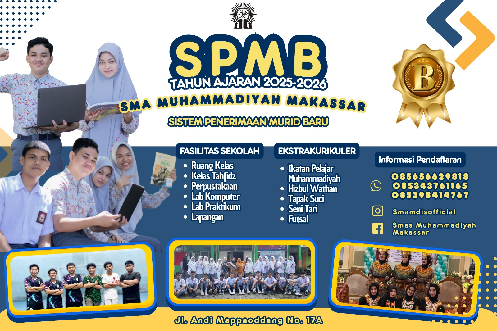

SMA Muhammadiyah
Beranda
Profil
Visi & Misi
Sejarah
Guru & Staff
Kesiswaan
Ekstrakurikuler
Seni Tari
Futsal
Organisasi
Ikatan Pelajar Muhammadiyah
Hisbul Wathan
Tapak Suci
Info PPDB
Kontak
Info PPDB

Untuk informasi lebih lanjut mengenai pendaftaran klik tombol di bawah:
Hubungi via WhatsApp